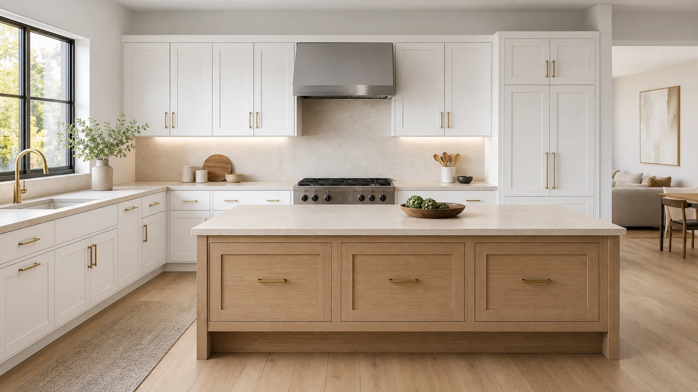
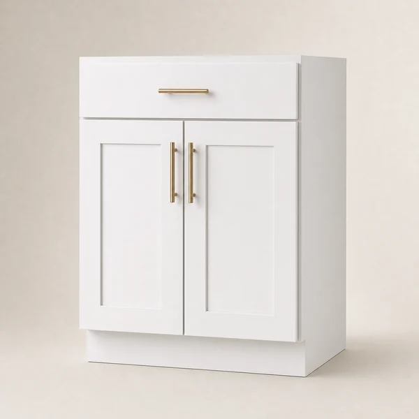
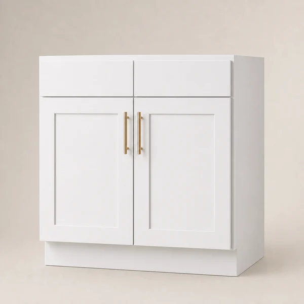
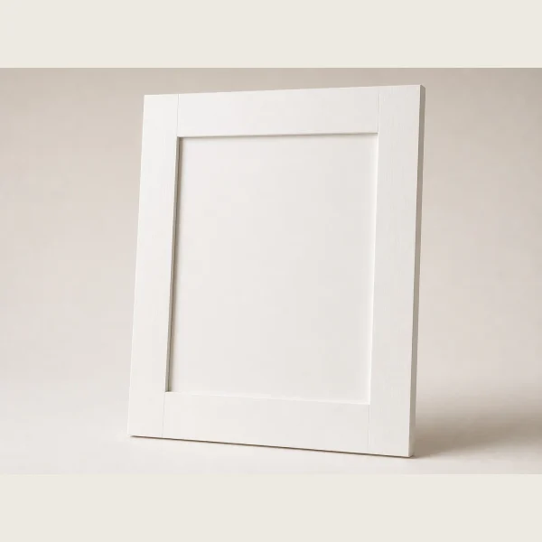
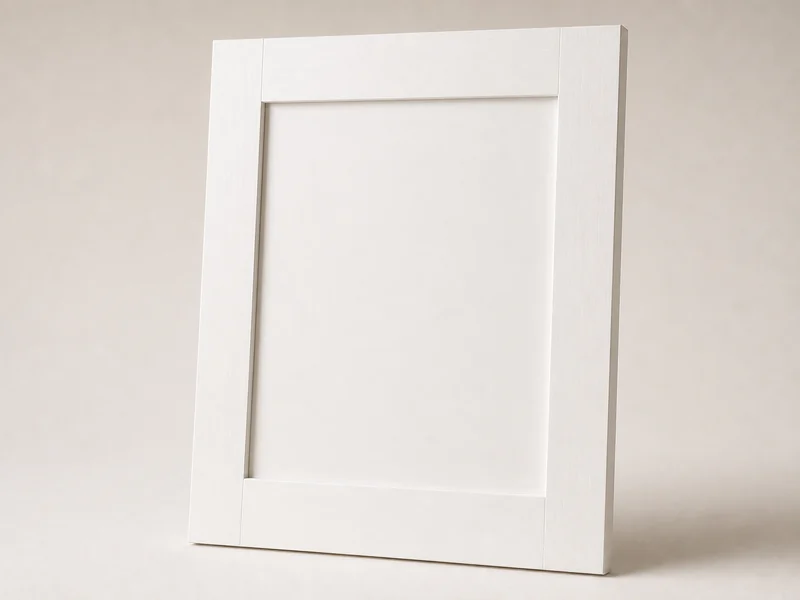
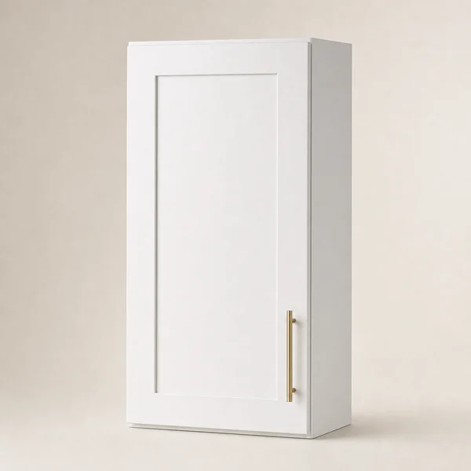
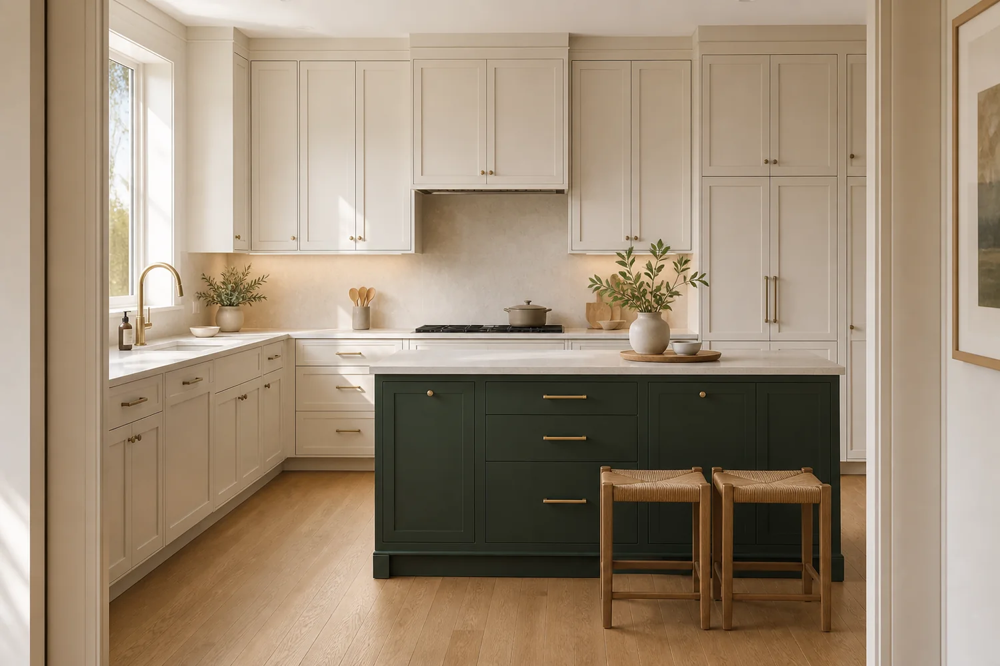
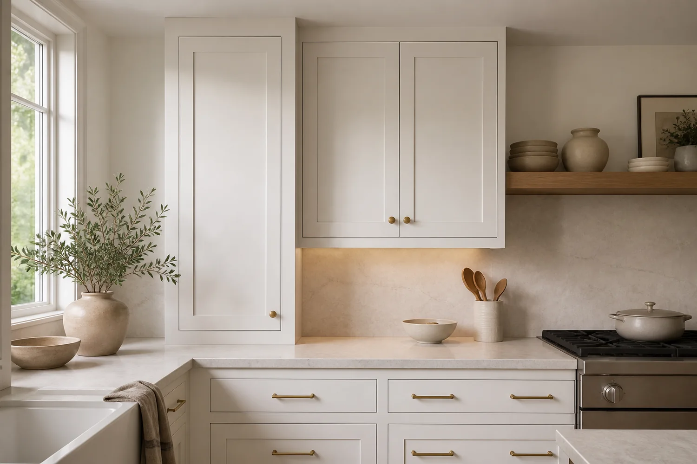
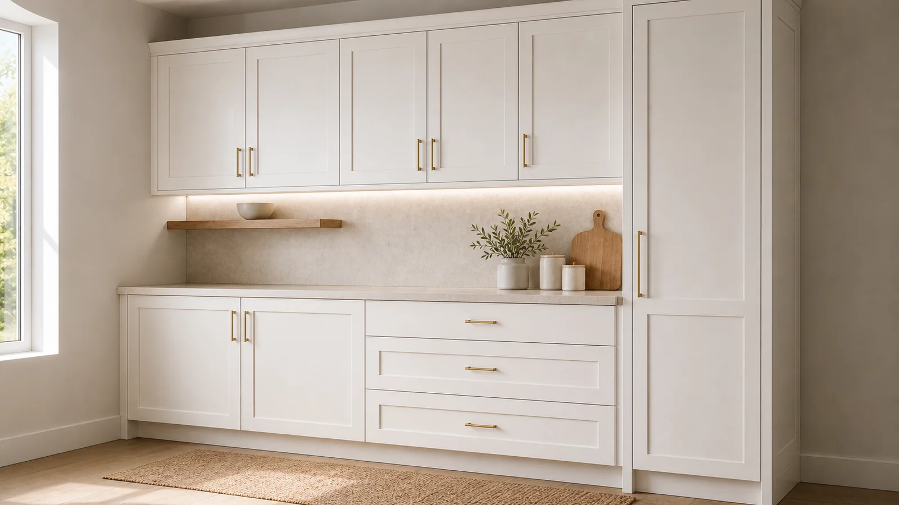
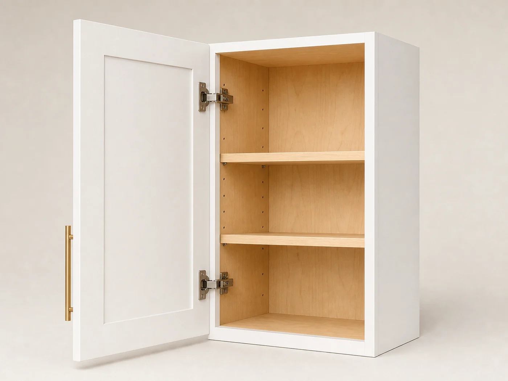

Designed for the kitchen
Premium cabinets.
Premium cabinets.
A kitchen designed around you.
Shop cabinetry with clear dimensions and practical specifications—or begin with professional design support and an itemized cabinet plan.
Shop with clarityProduct types, sizes and specifications
Plan with supportA guided brief for your whole room

Clear product dimensionsCompare sizes before you select
Professional design supportShare a plan, measurements or photos
Project-aware selectionVariations and SKUs stay visible
Focused guest checkoutReview the exact cabinet list
Shop by cabinet type
View all cabinetsBuild the room by function.
Start with the verified White Shaker catalogue, then narrow by cabinet type and width.

Work-surface storageBase CabinetsExplore type → Full-access organizationDrawer BasesExplore type →
Full-access organizationDrawer BasesExplore type → Floor-to-ceiling capacityPantry CabinetsExplore type →
Floor-to-ceiling capacityPantry CabinetsExplore type →
Plumbing-ready base typesSink BasesExplore type →
Finish the cabinet planAccessories & PanelsExplore type →
Measurements & photos→Kitchen plan→Cabinet list→Quote
Free 3D design
See the plan before you build the order.
Share the information you already have. A structured design brief gives the team the context needed to prepare a layout and cabinet list.
- Tell us about the space and your priorities.
- Add measurements, kitchen photos or an existing plan.
- Review the proposed layout and cabinet selection.
- Use the itemized list to move forward with confidence.
Product quality, made legible
View full product specifications
Confidence lives in the details.
Explore the construction information published for the 18″ White Shaker wall cabinet. Product-specific specifications remain visible again on the product page.
Shaker door construction
Wood door construction with an MDF inner panel, as listed in the current 18″ wall-cabinet specification.
Cabinet box
The current product specification lists a ½″ A-grade plywood cabinet box and finished cabinet sides.
Concealed hinges
The current product specification lists six-way adjustable, concealed soft-close European hinges.
Storage interior
Two adjustable shelves are listed for 30″ and 36″ heights; the 42″ height lists three.

How it works
View planning guidesA clear path from room to order.
Start with the room
Gather measurements, appliance locations and a few photographs.
Choose how to shop
Browse exact cabinet sizes or begin with a guided design brief.
Build the cabinet list
Keep function, dimensions, variations and SKUs visible.
Review project details
Check fillers, panels, finished ends and space constraints.
Complete checkout
Confirm the selected variations and totals in one focused flow.
Featured White Shaker cabinets
Shop the collectionPlan the room, one precise piece at a time.
Current public catalogue names and starting prices, captured July 18, 2026.

3 heightsWhite Shaker 18″ Wall Cabinet
From $174.32View product
2 widths
White Shaker 24″–27″ Base Cabinet
From $333.75View product
Drawer baseWhite Shaker Three Drawer Cabinet
From $343.44View product
Tall storageWhite Shaker 18″ Pantry / Utility Cabinet
From $650.37View product
Kitchen inspiration
Make room for the way you live.
Use these spaces as planning inspiration; always confirm the exact Temima product and dimensions before ordering.




Before you order
The best proof is a cabinet list you can understand.
Product-specific dimensions, SKUs and variation pricing stay visible from cabinet selection through checkout.
- Dimensions firstWidth, height and depth remain easy to scan.
- Exact selectionPrice and SKU update only after a valid size choice.
- Human supportDesign help stays available when the full project needs review.
Helpful answers
Start with what matters.
How do I know which cabinet sizes I need?
Use the catalogue filters when you already have a cabinet list. If you are beginning with measurements, photos or a plan, start with the design brief so the whole room can be considered.
Can I check out without creating an account?
Yes. The guest-checkout path keeps contact, delivery, payment and review steps together without requiring an account.
What should I share for a kitchen design?
Measurements, photographs, plans, appliance locations and inspiration images are useful. The guided form clearly separates required information from optional uploads.
Where can I see construction and assembly details?
Product-specific dimensions and construction details appear beside the purchase controls and in the specification section. Planning and policy guides are available in Resources.
Your project, made clearer
Start My DesignHave measurements, a sketch—or just a starting point?
Share what you have in a guided brief and give the design team the context needed to help.